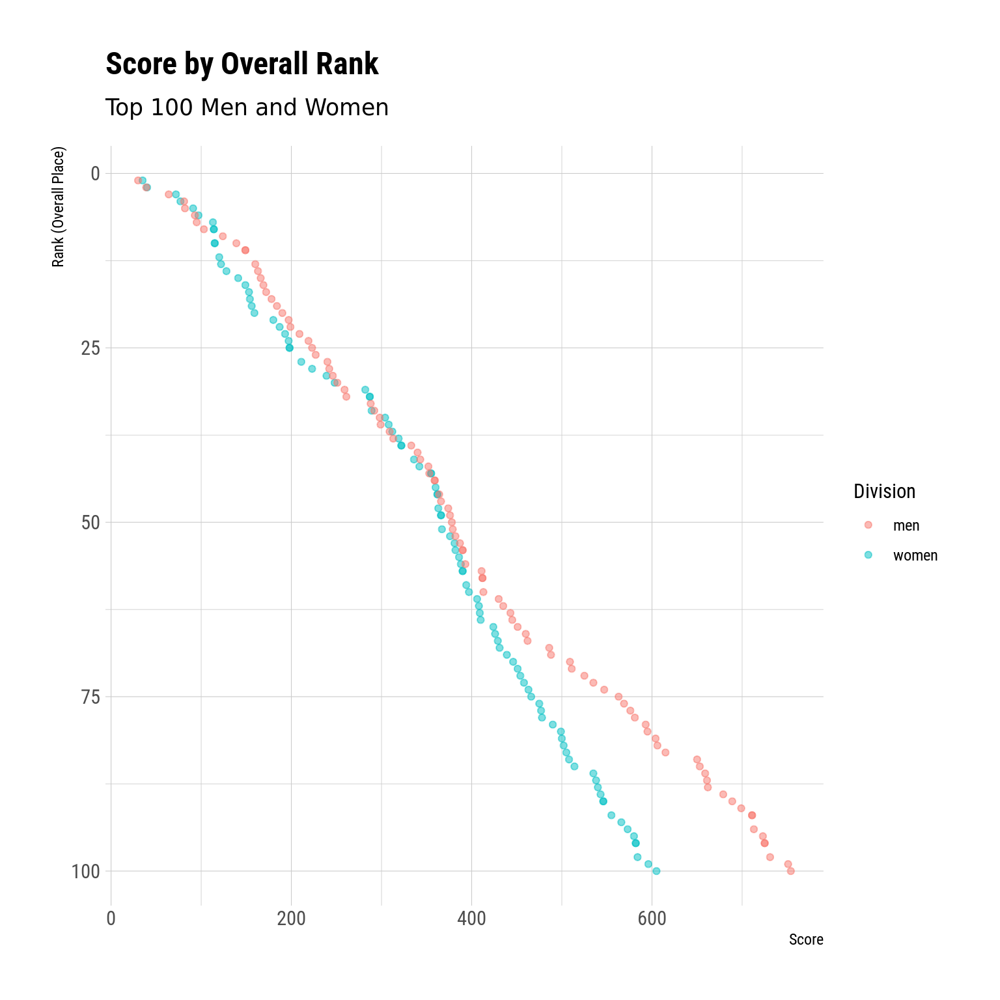
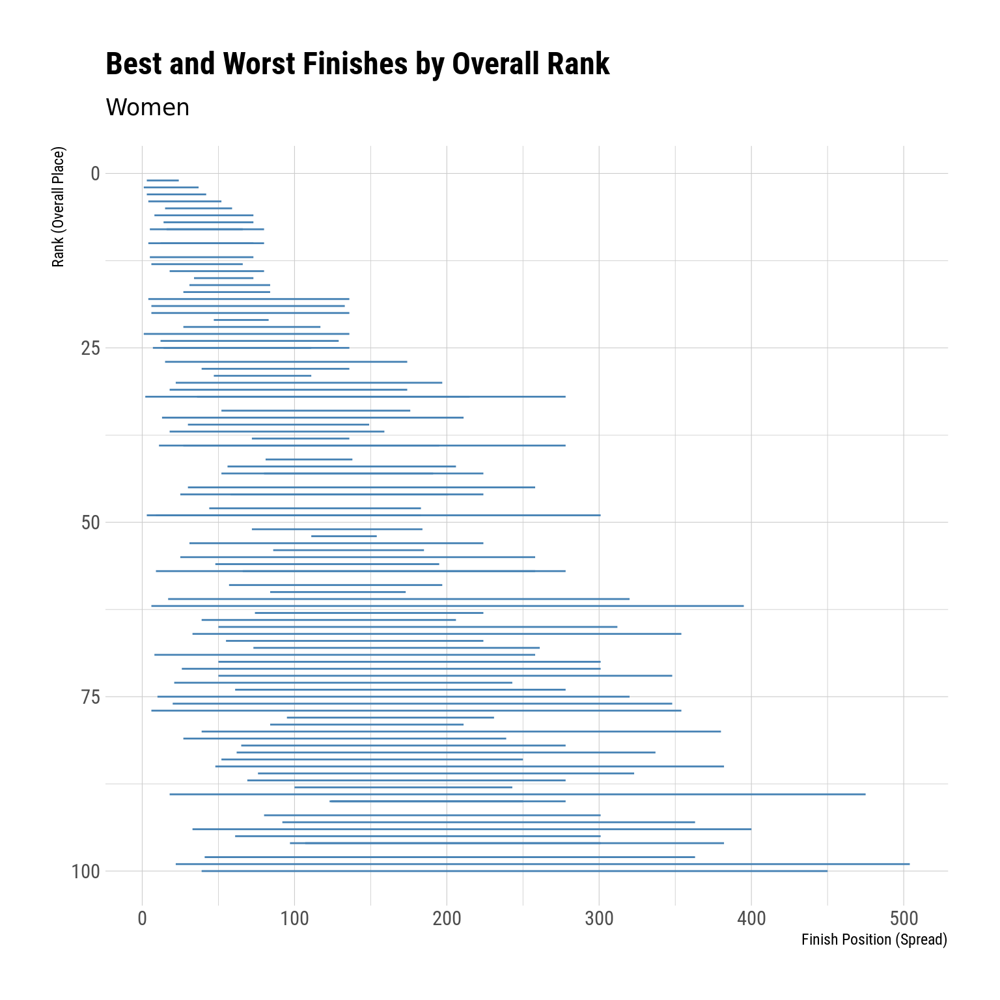
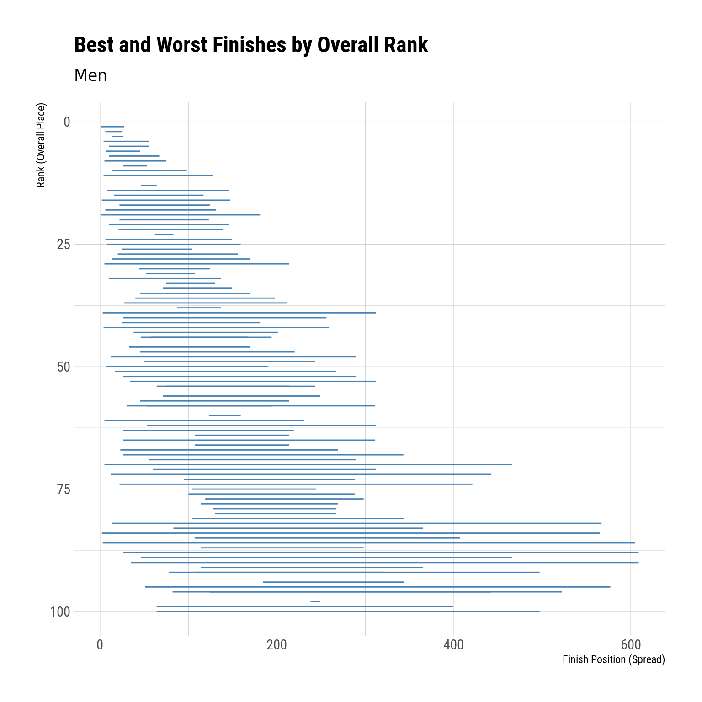
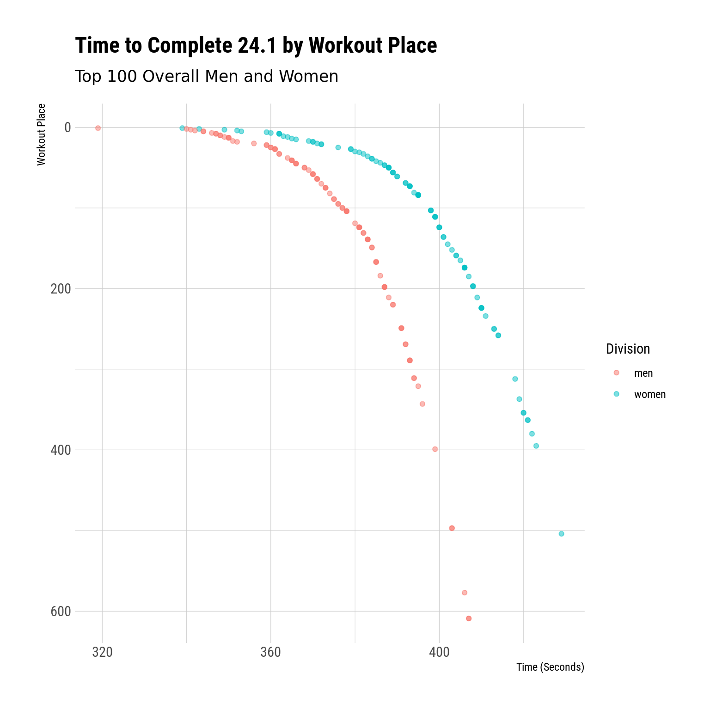
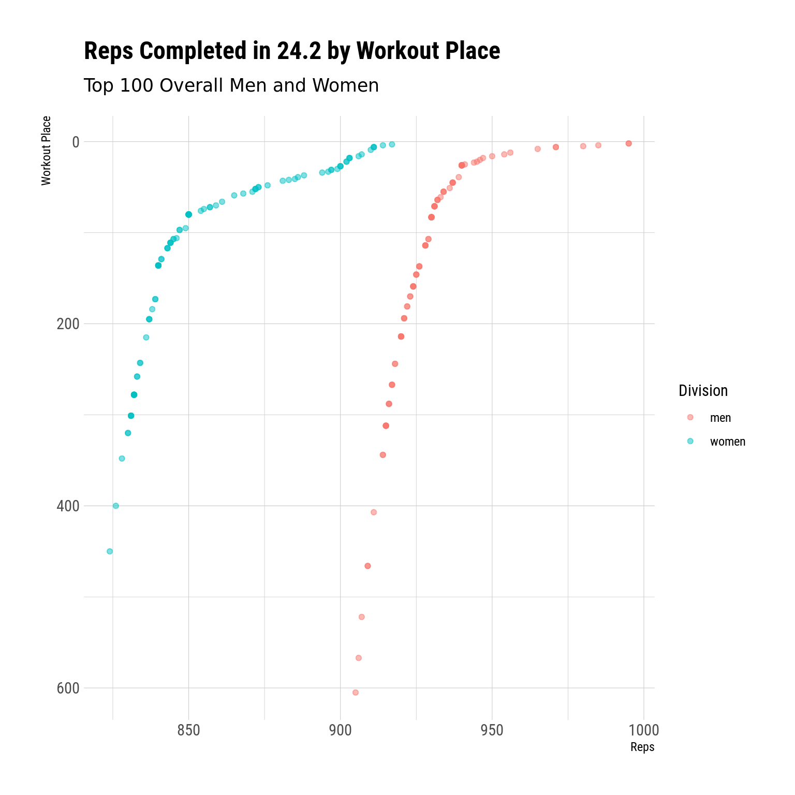
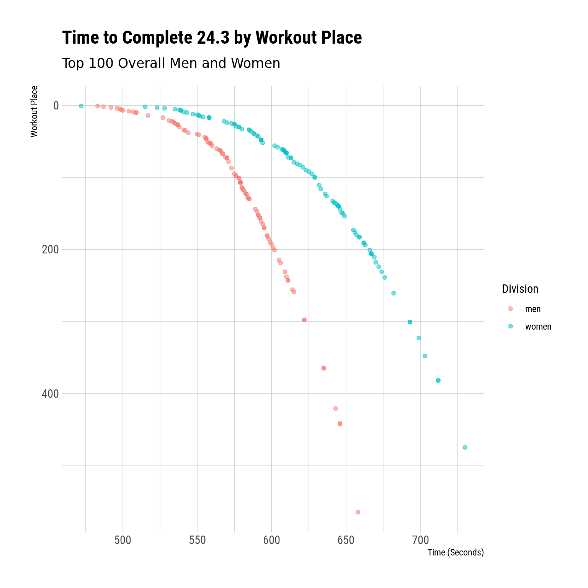

An exploration of data from the 2024 Crossfit Open
R
Crossfit
EDA
Published
March 19, 2024
Now that the 2024 Open is over, I figured it might be fun to look at some of the data from this year’s top 100 finishers. There’s a lot we can look at here, and I’m sure I’m going to leave a few things out – feel free to drop me a line if there’s something, like, urgent that I missed.
If you’re into R and want to do your own analysis, you can check out my work-in-progress crossfitgames package that has some tools for fetching and processing data from the CrossFit API. It’s in kind of a janky state right now, but it works fine for what I want to do today.
I’m including the code used to pull/clean data and create graphs here. It’ll be folded up by default, and I won’t really explain what it’s doing step-by-step, but if you’re into that sort of thing, you can take a look.
Code
library(crossfitgames)library(tidyverse)library(gt)library(hrbrthemes)library(lubridate)#placeholder for nowtheme_set(theme_ipsum_rc())women_raw <-open_leaderboard(2024, "women", top_n =100)men_raw <-open_leaderboard(2024, "men", top_n =100)women_lb <-extract_final_leaderboard(women_raw) |>mutate(div ="women")men_lb <-extract_final_leaderboard(men_raw) |>mutate(div ="men")#combine the two dataframesall_lb <-rbind(women_lb, men_lb)women_workout_res <-extract_workout_results(women_raw) |>mutate(div ="women")men_workout_res <-extract_workout_results(men_raw) |>mutate(div ="men")all_workouts <-rbind(women_workout_res, men_workout_res)
Top Finishers
First, let’s look at the top finishers for the men and women. We’ll start with the women:
One thing to keep in mind here is that lower scores are better in the Open, since your score is the sum of your rankings for each workout. Since there are 3 workouts, the best score possible would be 3.
On the women’s side, the most recognizable names are Loewen and Saunders, and a lot of the bigger names (Tia, Laura, Emma Lawson) are absent. This shouldn’t be concerning, but it’s potentially interesting.
The story is a little different here – lots of noticeable names that have historically done well at the games. Vellner, Adler, Ohlsen, Koski, Panchik, and Crouch.
Men and Women Scores by Rank
Another way we might look at the data is to compare the scores of the men to those of the women. This can give us a sense of the “depth” or level of competition across the field.
For instance, we can plot each athlete’s rank (overall placement) against the total score for men and women:
Code
ggplot(all_lb, aes(y = rank, x = score, color = div)) +geom_point(alpha = .5) +scale_y_reverse() +labs(x ="Score",y ="Rank (Overall Place)",title ="Score by Overall Rank",subtitle ="Top 100 Men and Women" ) +scale_color_discrete(name ="Division")

In cases where, for any given rank, the women’s score is less than the men’s score, we can assume (sort of) the women outperformed the men. For example, the 100th place woman had considerably fewer points than the 100th place man. This might tell us that, relative to the rest of the field, the 100th place woman is “better” than the 100th place man. Of course it’s not that straightforward – we could just as reasonably conclude that the men’s field is deeper than the women’s field – but it’s a fun thought exercise.
What is interesting, though, is that the score gap between the 1st and 100th woman is much smaller than the gap between the 1st and 100th point man. And that we see separation between the men and women around ~50th place.
Variance in Workouts – Women
Another interesting datapoint we can look at is the spread between an athlete’s best finish and their worst finish. Since the open is only 3 events, this rank will explain a lot of their overall variance (at the Games, where there are more events, the best-to-worst spread is kinda less important). Obviously, all of these athletes finished top 100 overall, so nobody completely bombed anything.
Let’s start with the women:
Code
women_best_worst <- women_workout_res |>group_by(athlete) |>summarize(worst =max(workout_place),best =min(workout_place),spread = worst - best ) |>left_join(women_lb, by ="athlete")women_best_worst |>ggplot(aes(y = rank, x = best)) +geom_segment(aes(xend = worst, yend = rank), color ="steelblue") +scale_y_reverse() +labs(x ="Finish Position (Spread)",y ="Rank (Overall Place)",title ="Best and Worst Finishes by Overall Rank",subtitle ="Women" )

Ok, so the way you interpret this plot:
The athlete’s overall rank is on the y-axis (the vertical axis)
The blue bar represents the spread of their performance. The left end is their best performance, the right end is their worst performance, and the width is the gap between best and worst
Keep in mind that having a small spread between your best and worst finish isn’t necessarily a good thing if your best finish is relatively high.
All in all, though, we tend to see bigger spreads the further down we get in the rankings, which kinda makes sense because a single bad event can crush your overall score with just 3 total events.
From here, we might want to look at which women had the largest best-to-worst even spreads:
Code
women_best_worst |>slice_max(spread, n =10) |>select(-div) |>gt() |>tab_header(title ="Largest Differences between Best and Worst Event",subtitle ="Women, CF Open 2024" )
Largest Differences between Best and Worst Event
Women, CF Open 2024
athlete
worst
best
spread
rank
score
Emily Rolfe
504
22
482
99
596
Caitlin Bernardin
475
18
457
89
543
Tracy Johnson
450
39
411
100
605
Laura Horvath
395
6
389
62
408
Aizhan Zharasova
400
33
367
94
573
Sara Alicia Fernandez Costas
354
6
348
77
477
Baylee Rayl Christophel
380
39
341
80
499
Makenna Enslin
382
48
334
85
514
Addison DesRosiers
348
20
328
76
475
Linda Keesman
363
41
322
98
584
We see Laura on here, and I think she did (relatively) poorly on the first event compared to her other 2 event finishes, hence the large spread:
Right, so she finished 395th in event 1, but then 6th and 7th.
Variance in Workouts – Men
And we can do the same thing for the men:
Code
men_best_worst <- men_workout_res |>group_by(athlete) |>summarize(worst =max(workout_place),best =min(workout_place),spread = worst - best ) |>left_join(men_lb, by ="athlete")men_best_worst |>ggplot(aes(y = rank, x = best)) +geom_segment(aes(xend = worst, yend = rank), color ="steelblue") +scale_y_reverse() +labs(x ="Finish Position (Spread)",y ="Rank (Overall Place)",title ="Best and Worst Finishes by Overall Rank",subtitle ="Men" )

So the point about having a small spread not necessarily being ideal is illustrated here – we see whoever finished in 98th has a teeny spread, but all of his finishes were ~250ish.
Code
men_best_worst |>slice_max(spread, n =10) |>gt() |>tab_header(title ="Largest Differences between Best and Worst Event",subtitle ="Men, CF Open 2024" )
Largest Differences between Best and Worst Event
Men, CF Open 2024
athlete
worst
best
spread
rank
score
div
Colin Bosshard
605
3
602
86
659
men
Lazar Đukić
609
26
583
88
662
men
Henry Matthews
609
35
574
90
689
men
Taylor Self
565
2
563
84
650
men
Fernando Llaneza Pardillos
567
13
554
82
606
men
Bailey MacDonald
577
51
526
95
723
men
Carlos Ferrara Coloma
466
5
461
70
509
men
Tyler Christophel
522
82
440
96
725
men
Javier Gonzalez Fernandez
497
64
433
100
754
men
Chandler Smith
442
12
430
72
525
men
These spreads are wider than the ones we saw for the women, which again maybe suggests that the men’s field is more variable than the women’s field?
24.1
Now let’s look briefly at individual workout results. Obviously, we’ll start with 24.1. You can see the workout here.
Code
wk1 <- all_workouts |>filter(workout_num ==1) |>mutate(time_score =period_to_seconds(ms(score)))wk1 |>ggplot(aes(x = time_score, y = workout_place, color = div)) +geom_point(alpha = .5) +scale_y_reverse() +scale_color_discrete(name ="Division") +labs(x ="Time (Seconds)",y ="Workout Place",title ="Time to Complete 24.1 by Workout Place",subtitle ="Top 100 Overall Men and Women" )

I think this is a pretty cool plot in that it shows the “shape” of the performances by these athletes. The waterfall shape suggests that there’s more separation (horizontal space) amongst the very top finishers, but the increasingly steep slope toward the right end of the graph suggests there’s less time between worse-finishing places. Which makes sense.
See that one pink dot all the way to the left – who crushed this workout that hard?
Code
wk1 |>slice_min(time_score, n =1) |>pull(athlete)
[1] "Colten Mertens"
24.2
We’ll do the same thing for 24.2. You can see the workout description here
Code
wk2 <- all_workouts |>filter(workout_num ==2) |>mutate(n_reps =parse_number(score))wk2 |>ggplot(aes(x = n_reps, y = workout_place, color = div)) +geom_point(alpha = .5) +scale_y_reverse() +scale_color_discrete(name ="Division") +labs(x ="Reps",y ="Workout Place",title ="Reps Completed in 24.2 by Workout Place",subtitle ="Top 100 Overall Men and Women" )

We see basically the inverse pattern here – the curve flattens toward the right (since more reps is better in this case). What’s interesting is that we see this flattening occur at around the top ~100 finishers of the workout for women, but at maybe the top ~30 for men. This might have something to do with the scoring (1 double under obviously isn’t equivalent to 1 deadlift), or it might be an indication that the top 100 women were considerably better than the next others in this workout. Again, it’s kinda hard to tell.
24.3
And we’ll wrap up by looking at the same type of plot for 24.3. You can see the workout description here
Code
wk3 <- all_workouts |>filter(workout_num ==3) |>mutate(time_score =period_to_seconds(ms(score)))wk3 |>ggplot(aes(x = time_score, y = workout_place, color = div)) +geom_point(alpha = .5) +scale_y_reverse() +scale_color_discrete(name ="Division") +labs(x ="Time (Seconds)",y ="Workout Place",title ="Time to Complete 24.3 by Workout Place",subtitle ="Top 100 Overall Men and Women" )

Again we see basically the same pattern we saw in 24.1
I’ll probably do something like this again for the Quarterfinals and Semis, so if there’s anything else people would like to see, let me know.